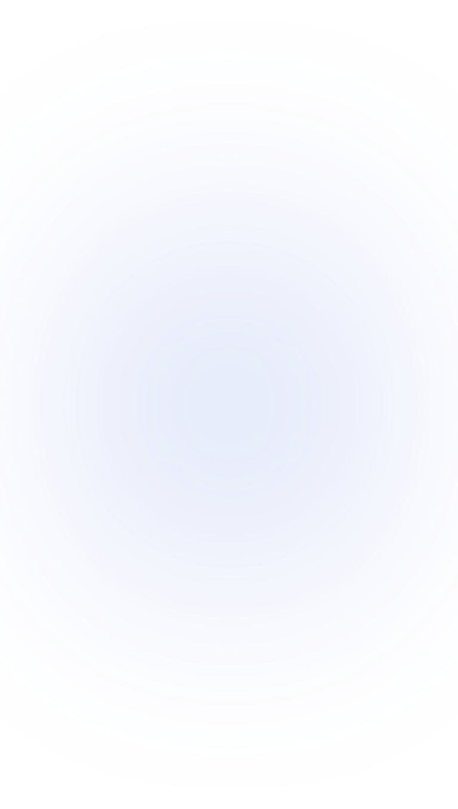
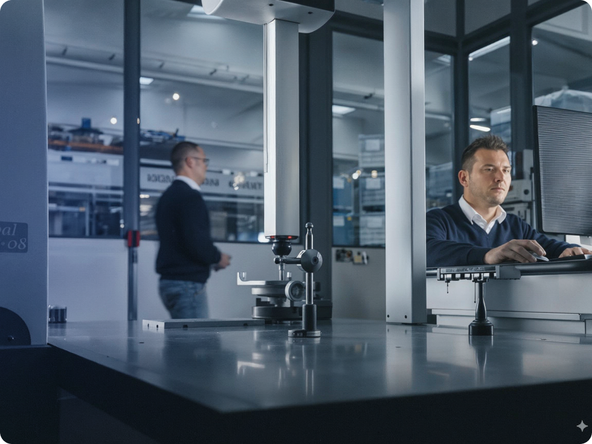
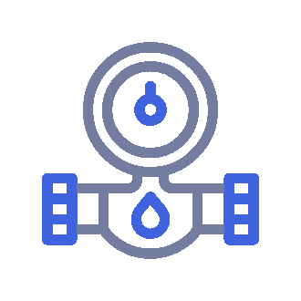
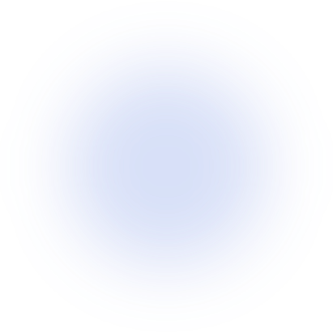

Atest higieniczny PZH


Produkty o wyjątkowej trwałości muszą sprostać wyjątkowym próbom
Przechodzą je w specjalistycznym laboratorium hydraulicznym i elektrycznym Pedrollo.



Wieloetapowa kontrola laboratoryjna.
Testujemy to, co decyduje
o bezawaryjności
Nasze laboratorium to więcej niż miejsce testów. Łączymy w nim rygorystyczną kontrolę jakości z nieustannym rozwojem technologicznym. Efekt? Pompy, które przewyższają branżowe standardy i sprawdzają się nawet w najbardziej wymagających warunkach pracy.

Dział badań i rozwoju projektuje pompy wykorzystując zaawansowane instrumenty badawcze i nowoczesne technologie obliczeniowe.

Przeprowadzamy kompleksowe testy hydrauliczne i obliczenia dynamiki płynów. Każdy komponent przechodzi szczegółową analizę przed dopuszczeniem do produkcji.

Przeprowadzamy testy hydrauliczne i elektryczne, symulujemy ekstremalne warunki pracy. Każdy model przechodzi wieloetapową kontrolę przed i po wdrożeniu do produkcji.

Aktywnie poszukujemy innowacji, które mogą uczynić nasze pompy jeszcze lepszymi. Wdrażamy nowe rozwiązania techniczne zwiększające energooszczędność i niezawodność.




Nasze laboratorium wyposażyliśmy w zaawansowaną platformę testową, która odtwarza nawet najbardziej
wymagające warunki pracy.
Dzięki temu każda pompa Pedrollo, zanim trafi do Ciebie, przechodzi próby w warunkach
trudniejszych niż te, które czekają ją w rzeczywistości. To nasza gwarancja niezawodności.

Łączymy zaawansowane obliczenia dynamiki płynów z dokładną analizą komponentów. Każdy element pompy jest badany pod kątem wydajności i trwałości. Nie pozostawiamy miejsca na przypadek.


Każdy element pompy przechodzi szczegółową kontrolę międzyoperacyjną. Weryfikujemy dokładność wymiarów, jakość obróbki, wyważenie, spasowanie, poprawność skręcenia elementów, wszelkie parametry elektryczne, mechaniczne i hydrauliczne.


Pompy, które nie zawodzą wtedy,
gdy najbardziej ich potrzebujesz